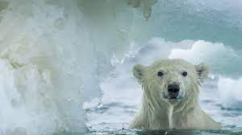

El Artico ha perdido el 14% de su hielo marino perenne en solo un año
El Ártico es el área alrededor del Polo Norte de la Tierra. Incluye partes de Rusia, Estados Unidos (Alaska), Canadá, Dinamarca (Groenlandia), Islandia, la región de Laponia, en Suecia, Noruega, Finlandia, y las islas Svalbard, así como el océano Ártico. Las isotermas de 10 °C en julio, que delimitan el clima polar , son comúnmente usadas para definir el borde de la región ártica.
El Ártico es en su mayor parte un extenso océano cubierto de una banquisa, rodeado por tierras despobladas de árboles y con el subsuelo helado. Rebosa de vida, incluyendo organismos viviendo en el hielo, peces, y mamíferos marinos, pájaros, y algunas sociedades humanas. Por su naturaleza la región ártica es una área única . Las culturas de la región y los oriundos del lugar se han adaptado a las condiciones extremas y al frío."Desde la perspectiva del balance físico, químico y biológico, está en una posición clave. Reacciona de forma sensible particularmente a los cambios del clima, que aporta un reflejo global del estado del entorno. Desde la perspectiva de la investigación en el cambio climático, este es considerado un sistema de alerta temprana".